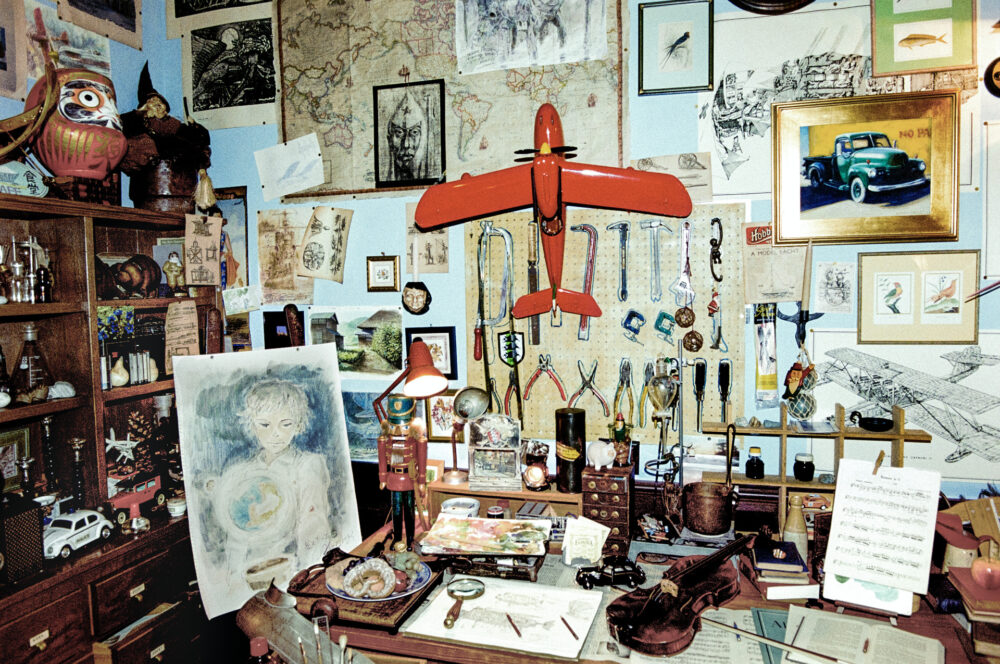

Timeline:

1985
Studio Ghibli is founded.

1986
Release of their first feature film, "Laputa: Castle in the Sky."
1988
"My Neighbor Totoro" is released.
1997
"Princess Mononoke" becomes the highest-grossing film in Japan at that time.
2001
"Spirited Away" wins the Academy Award for Best Animated Feature.
2013
Hayao Miyazaki announces his retirement.
2017
Miyazaki comes out of retirement to work on a new feature film.